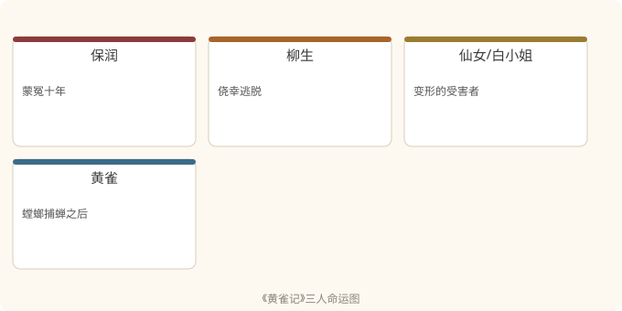

黄雀记
一、基本信息
| 作者 | 苏童 |
|---|---|
| 成书/出版 | 2013年出版（中国作家网官方名单 C012：作家出版社）；2015年获第九届茅盾文学奖（C012） 历届茅盾文学奖获奖作品一览（中国作家网）（官方文学机构） |
| 国别/地区 | 中国 |
| 时代 | 现当代 · 当代 |
| 体裁 | 长篇小说 |
| 语言 | 汉语（白话） |

《黄雀记》三人命运图（主题·结构图）
二、创作背景
中国作家网（C015）：《黄雀记》的故事背景设定在香椿树街，跨度'从上世纪80年代到世纪之交'。
评论定位（C015）：'无论在苏童的创作史上，还是当代文学的整体格局中，都是一个带有现象意味的存在'。
三、内容脉络
保润在医院初遇仙女；水塔争吵中保润以捆绑绝技把仙女拴在铁梯上，随后发生强奸案，保润蒙冤入狱十年（C015）。
柳生是'侥幸逃脱惩罚的强奸犯'，代保润照顾祖父；仙女变身白小姐追逐物质欲望（C015）。
结局：保润在柳生的婚礼上捅死柳生（C015）。
四、主要人物表
| 人物 | 身份 | 说明 |
|---|---|---|
| 保润 | 蒙冤者 | 捆绑绝技（C015） |
| 柳生 | 真凶 | 侥幸逃脱者（C015） |
| 仙女（白小姐） | 受害者·堕落者 | 追逐物质欲望（C015） |
五、主题与艺术特点
- 性格悲剧：三人'不是被动地走向了悲剧'，而是'因性格缺陷或主动选择陷入悲剧'（C015）。
- 黄雀在后：'你在作为螳螂去捕食蝉的时候，同时也是在自我制造着一只黄雀'（C015）。
- 时代变迁中的香椿树街（C015）。
六、影响与评论
- 中国作家网官方名单：第九届茅盾文学奖获奖作品、作家出版社（C012）。
历届茅盾文学奖获奖作品一览（中国作家网）（官方文学机构） - 中国作家网：'以性格悲剧为核心的美学形态'（C015）。
《黄雀记》：作为性格悲剧的美学建构（中国作家网）（官方文学机构）
七、阅读建议
难点
- 三段式结构（保润的春天/柳生的秋天/白小姐的夏天——通说待核）。
- 罪与罚的道德判断。
- 《黄雀记》（作家出版社，C012 官方名单口径）。
可与《红字》对读：罪耻主题的中西对照。
八、待核实
- 三段式季节标题说待核。
- 2013年《收获》连载细节待核。
- 祖父的失魂症意象考订待核。
本页主要来源
苏童的其他收录作品：黄雀记